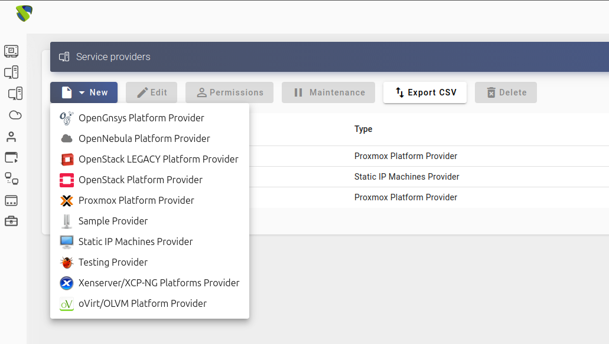
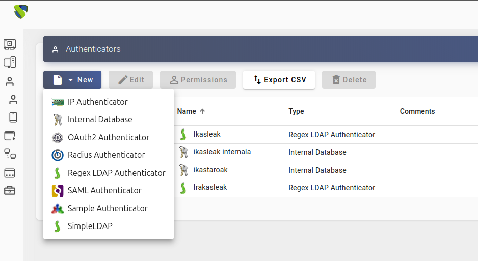
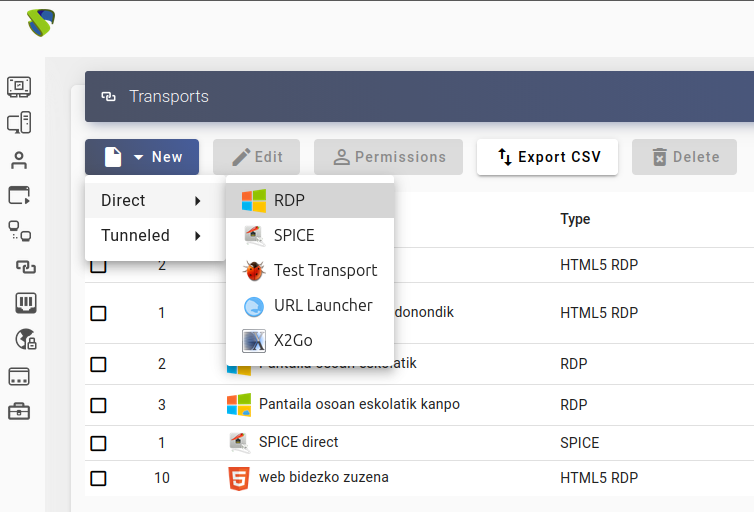
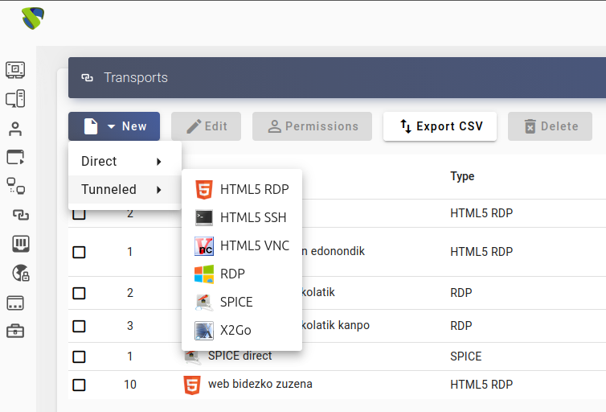
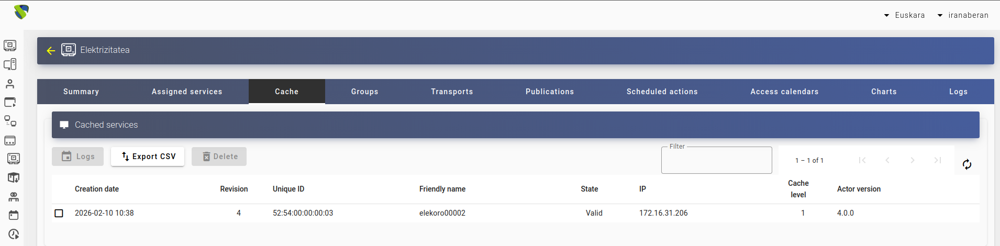
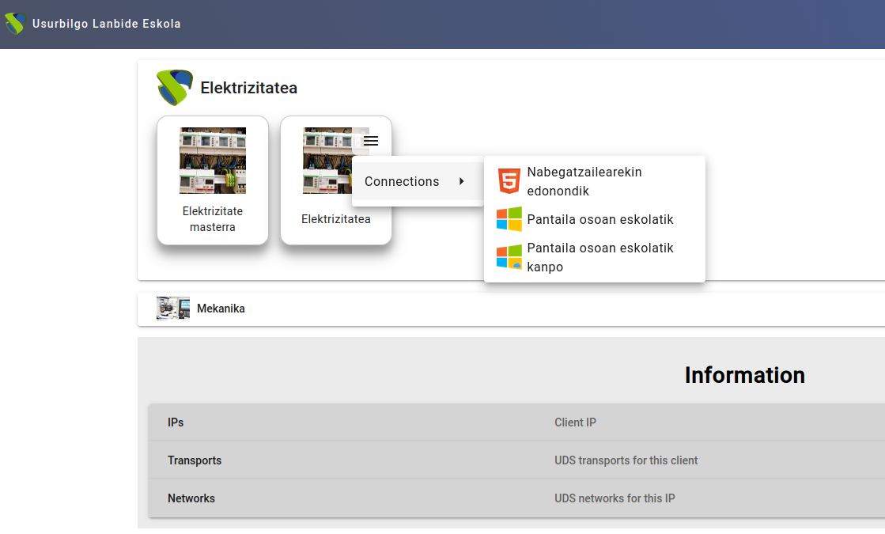

openUDS ingurunea
Aitzol Naberan Burgaña
iranaberan@lhusurbil.eus | Zubieta LHII
Nondik gatoz?
- 2021-2022 ikasturtea, uztaileko esleipenak


- Idazmahai birtuala? UDS?
DISCLAIMER
IsardVDI
Idazmahai birtualak
Zertaz ari gara hitz egiten?

Eta OpenUDS?
- Makina birtualak eta beraien atzipena kudeatzeko ingurunea
- UDS Enterpriseren open bertsioa
- Virtualizazio zerbitzari desberdinak erabiltzeko aukera
- OpenUDS ez da arduratzen makinen birtualizazioaz, hornitzaileen bidez egiten du

- Autentikazio aukera desberdinak

- Konexio aukera desberdinak


- Multzoak (pool) sortzeko aukera
- Hemen kudeatzen dira makina birtual mota desberdinen erabilpen baldintzak


Instalazioaren eskema

Inplantazioa
Hasiera batean eskuzko instalazioa
Froga/testing astuna -> docker compose ingurunea
Zubietan 2022 ikasturte bukaeran frogetan desplegatuta
Garapena
Oinarri sistema VirtualCable enpresa
Docker ingurunea
Mantenua
- openUDS-ko azken bertsiora (4.0) eguneratua
- Eguneraketa (momentuz) Zubieta + Binovo
- Akordioak:
- Oinarri garapenak irekian egiteko konpromisoa
- OpenUDSren oinarri kodea bakarrik, pertsonalizaziorik ez